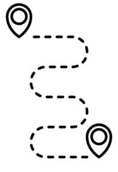
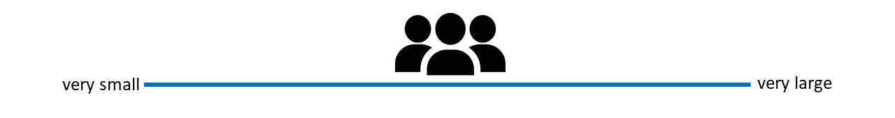
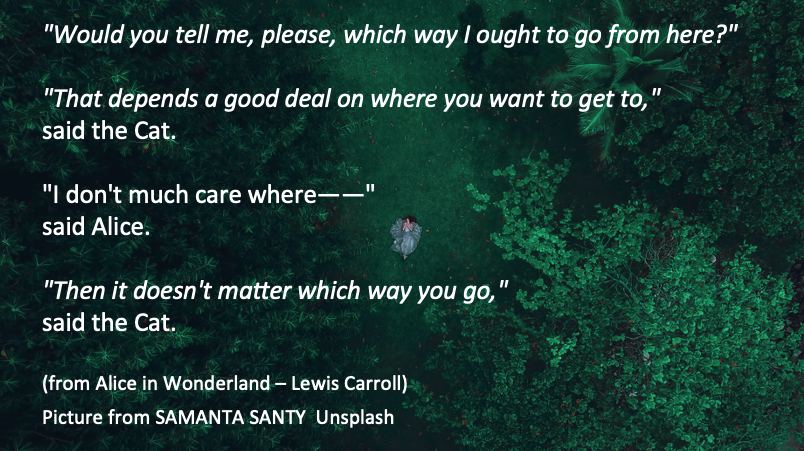
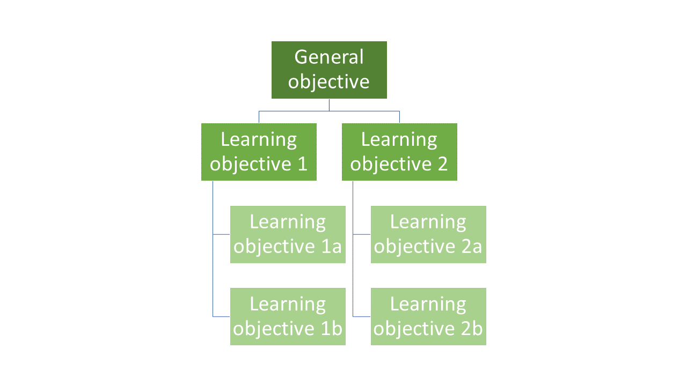
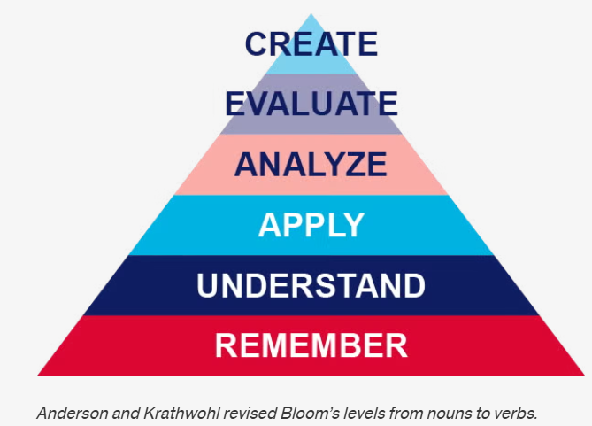
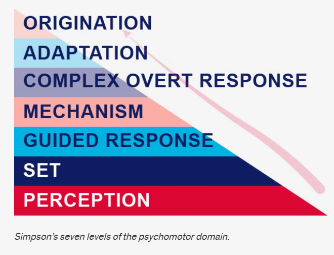

Teaching open research: Core didactic principles
17/05/2026
Licence

This current work by Sarah von Grebmer zu Wolfsthurn, Sara Lil Middleton and Malika Ihle is licensed under a CC-BY-SA 4.0 Creative Commons Attribution 4.0 International SA License. It permits unrestricted re-use, distribution, and reproduction in any medium, provided the original work is properly cited. If you remix, transform, or build upon the material, you must distribute your contributions under the same license as the original.
Code snippets are dedicated to the public domain and licenced under a CC0 1.0 Creative Commons Universal Licence. You may use, modify, distribute, and sell the code snippets for any purpose, without permission or attribution. The code snippets are provided “as is”, without warranty of any kind.
Contribution statement
Creator: Von Grebmer zu Wolfsthurn, Sarah ( 0000-0002-6413-3895)
0000-0002-6413-3895)
Reviewer: Middleton, Sara ( 0000-0001-5307-8029)
0000-0001-5307-8029)
Consultant: Ihle, Malika ( 0000-0002-3242-5981)
0000-0002-3242-5981)
Prerequisites
Important
Before completing this submodule, please carefully read about the prerequisites.
| Prerequisite | Description | Where to find this |
|---|---|---|
| Basic familiarity with Open Science practices | Examples: R, Quarto, Git, GitHub, preregistration, Open Access etc. | Click here to get familiar with Open Science first |
Before we start: Survey time!
Which of the following concepts or skills do you now feel most confident about in relation to didactics and teaching? (Select all that apply)
Considering the learner’s prior knowledge in the learning process
Constructivism
Constructive alignment
Formulating clear learning objectives
What is your level of familiarity with the three learning domains (cogntive, affective and psychomotor)?
I have never heard of them before.
I have heard of them but have never considered them in my teaching.
I have a basic understanding and sometimes implement them in my teaching.
I am very familiar and have routinely applied them in my teaching.
What is your level of familiarity with Bloom’s taxonomy?
I have never heard of it before.
I have heard of it but have never implemented it in my teaching.
I have a basic understanding and sometimes implement it in my teaching.
I am very familiar and have routinely applied this in my teaching.
Discussion of survey results
What do we see in the results?
Today’s session journey

From
I am not sure what good teaching in open research involves
to
I feel more confident that I can pass on my knowledge of open research to my learners using evidence-based didactic methods.
Where are we at?
Previously:
- Getting to know the group
Up next:
- What is learning?
- Constructivism
- Constructive alignment
- Learning domains
- Levels of knowledge: Bloom’s taxonomy
- Formulating learning objectives
Key terms and definitions
Some terms we will come across today…
- Constructivism:
- Constructive alignment:
- Bloom’s Taxonomy:
Key terms and definitions
Some terms we will come across today…
- Constructivism: The notion that learners actively build their own understanding of the world rather than absorbing information passively.
- Constructive alignment: A teaching approach in which learning objectives, teaching activities, and assessment tasks are deliberately aligned so that learners actively construct the knowledge and skills they are expected to demonstrate.
- Bloom’s Taxonomy: A framework for classifying levels of learning and cognitive skills, organized from lower-order thinking skills such as remembering and understanding to higher-order skills such as analyzing, evaluating, and creating.
Learning objectives
At the end of this session, you will…
- Understand basic didactic concepts as the basis for learning success
- Analyze how knowledge can be organized depending on the level of expertise
- Evaluate the alignment between learning objectives, assessment types and teaching activities
- Formulate concrete learning objectives according to specific learning domains for real-world content
Getting started!
How much teaching experience do you have?
- Workshops, peer training, (guest) lectures, seminars, lab presentations etc. on open research topics

How much have you already thought about didactics?
- When teaching about open research, have you considered didactic elements in you design and/or teaching style..?

How big are your teaching/training audiences?
- i.e., what is the average group size you teach in open research? (< 5 people = very small, > 100 people = very large)

Your turn: What is learning?
What is learning?
“…a process that leads to change, which occurs as a result of experience and increases the potential for improved performance and future learning”
Ambrose, S. A., Bridges, M. W., DiPietro, M., Lovett, M. C., Norman, M. K., & Mayer, R. E. (2023), page 2-3. Slide adapted from Laura Carter: “Evidence-based Training” https://zenodo.org/records/18905547. Slide originally licenced under CC BY 4.0: https://creativecommons.org/licenses/by/4.0/
What is learning?
As a process (not a product), learning …
- is learner-centered and something that learners themselves “do”
- is active and self-controlled
- is integrated in a broader context and a positive learning environment
- is shaped by prior knowledge
- is inferred from learners’ products or performance
Ambrose, S. A., Bridges, M. W., DiPietro, M., Lovett, M. C., Norman, M. K., & Mayer, R. E. (2023), page 2-3. Efgivia et al. (2023) Slide adapted from Laura Carter: “Evidence-based Training” https://zenodo.org/records/18905547. Slide originally licenced under CC BY 4.0: https://creativecommons.org/licenses/by/4.0/
What is learning?
Constructivism: Learning is not passively received, but actively built and shaped by prior knowledge and the learning context. .
Fosnot (2013)
The importance of prior knowledge
Prior knowledge … can help or hinder learning!
Knowledge = facts, concepts, beliefs, values, models, perceptions, attitudes
- Can be accurate, complete and appropriate for context
- Can be inaccurate, incomplete or inappropriate for context
Your turn!
What does being an expert mean?
What is something that you are an expert in?
How does your experience when you are acting as an expert differ from when you are not an expert?
A model of skills acquisition

The organisation of prior knowledge

Your turn!
Pick a topic from open research (different from open access). Sketch out the mental model of a novice in comparison to a competent practitioner and an expert and provide concrete examples of how the organisation of knowledge differs among these three types of learners.
What would help you organize your knowledge?
Is there something that you are currently learning how to do?
Can you identify things that would help you with organizing your mental model in a course or workshop?
Enhancing the organisation of knowledge
Some strategies …
- Provide learners with a big picture or outline of your workshop/course
- Clearly lay out expectations or objectives for a session
- Create opportunities to discover learners’ prior knowledge
- Make connections between concepts explicit
- Encourage learners to make these connections themselves (sorting tasks, concept maps)
- Monitor learners’ work for problems in their knowledge organization or mental model, e.g., add assessment tasks or progress trackers
Constructive alignment
Focus on learning objectives: what do we want our learners to achieve?

Biggs, 1996
Your turn!
Match each learning goal with an assessment type and reflect the following:
- Why does the assessment type fit the specific learning goal?
- What teaching activities can you think of that would align with the learning goal and the corresponding assessment type?
Practical activity
| Learning goal | Assessment type |
|---|---|
| A: Create a reproducible research pipeline | 1: Hand in a brief essay on Green open access along with two ethical benefits and two challenges |
| B: Apply FAIR data principles to a dataset | 2: Generate a GitHub project and add project documentation (wiki) |
| C: Analyze reproducibility issues in published studies | 3: Hand in a data management plan (DMP) |
| D: Understand ethical implications of open access | 4: Write a critical review of an open dataset/paper |
Setting learning objectives
Setting learning objectives

“Hierarchy” of learning objectives
- What is the general objective of this course?
- What are specific individual learning objectives?

Three domains of learning
- Cognitive: knowledge or thinking
- Affective: growth in feelings or emotional areas (attitude or self), values
- Psychomotor: manual or physical skills, change in behaviours
Stapleton-Corcoran, E. (2023). “Bloom’s Taxonomy of Educational Objectives.” Center for the Advancement of Teaching Excellence at the University of Illinois Chicago. Retrieved 10. Augut 2026 from https://teaching.uic.edu/blooms-taxonomy-of-educational-objectives/
Cognitive domain
Learning focused on expanding or building up knowledge and thinking skills as learning outcome
Widely implemented in education and typically connected to Bloom’s taxonomy
Example:
- Learning goal: Learning will be able to analyze how open science practices improve research transparency and reproducibility
- Teaching activity: Evaluation and comparison of reproducible and non-reproducible research workflows or published studies
- Assessment task: Group presentation discussing strengths, limitations, and transparency of selected research practices or publications
Cognitive domain

Affective domain
Learning focused on identifying and developing attitudes and values of learners as learning outcome
Difficult to measure directly, but can be assessed through observable behaviors (e.g., appreciation, showing commitment, awareness of nuances)
Example:
- Learning goal: Learners will actively engage with with differing views on the pros and cons of preregistration by askingclarifying questions and incorporating at least one alternative viewpoint into their own arguments
- Teaching activity: Learners participate in a panel discussion in which they argue either the benefits or the limitations of preregistration in scientific research.
- Assessment task: Learners write a reflection essay in which they summarize the arguments presented during the discussion and reflect on how considering both the advantages and disadvantages of preregistration influenced their own perspective on open science practices.
Affective domain

Psychomotor domain
Learning focused on implementing, expanding and building physical skills and behaviours, .e.g., through physical movement, coordination and motor skills as learning outcomes (e.g., measured in terms of speed, precision or technical execution)
Example:
- Learning objective: Learners will accurately upload, document, and share a research dataset in an open repository using appropriate metadata and licensing practices.
- Teaching activity: Hands-on workshop where learners practice preparing metadata, selecting appropriate licences and uploading to an open repository.
- Assessment task: Each learner independently uploads a dataset and accompanying documentation to a repository with a suitable licence.
Psychomotor domain

Learning objectives within learning domains: Recap
| cognitive | affective | psychomotoric |
|---|---|---|
| origination | ||
| create | adaptation | |
| evaluate | characterizing | complex overt response |
| analyse | organizing | mechanism |
| apply | valuing | guided response |
| understand | responding | set |
| remember | receiving | perception |
Your turn!
You are tasked to design a course module on Open Research practices and would like to include a lesson on open access publishing. The learning objectives for each learning domain are:
Cognitive domain: Learners will be able to compare different open access publishing models, e.g., Gold, Green and Diamond Open Access and critically assess their advantages and limitations.
Affective domain: Learners will critically reflect on the benefits and challenges of open access publishing and demonstrate openness toward differing perspectives on accessibility and publication costs.
Psychomotor domain: Learners will accurately upload a manuscript to an open access repository and correctly apply metadata and an apprpriate license.
For each learning goal, design one assessment task, including an assessment method (checklist, scoring rubric etc.) and define at least one observable metric of successfully achieving the learning goal.
Formulating learning objectives

Your turn!
Navigate to the following online tutorial: https://lmu-osc.github.io/introduction-to-zotero/.
Skim over the different sections using the navigation menu or the arrows at the bottom of the page to get an idea of the content of the tutorial.
Using Bloom’s taxonomy, formulate three learning objectives and assessment methods that match the content and the teaching activities of the tutorial. Consider the following: Which level of Bloom’s taxonomy are you at and which domain are you targeting?
Take-home messages
Learning in an active process, integrated in a larger context and strongly shaped by prior knowledge and beliefs (constructivism)
Different learners differ in their organization of prior knowledge: experts enjoy more connections and short-cuts among pieces of knowledge
Ensuring that learning objectives, the assessment tasks and the teaching activities align is key for a successful learning process(constructive alignment)
Before teaching, we need to know where we are going, i.e., formulate learning objectives according to a suitable learning domain(s): cognitive, affective, psychomotor
The formulation matters!
Place a particular emphasis on the verbs when formulating learning objectives!
Survey time!
Which of the following concepts or skills do you now feel most confident about in relation to didactics and teaching? (Select all that apply)
Considering the learner’s prior knowledge in the learning process
Constructivism
Constructive alignment
Formulating clear learning objectives
What is your level of familiarity with the three learning domains (cogntive, affective and psychomotor)?
I have never heard of them before.
I have heard of them but have never considered them in my teaching.
I have a basic understanding and sometimes implement them in my teaching.
I am very familiar and have routinely applied them in my teaching.
What is your level of familiarity with Bloom’s taxonomy?
I have never heard of it before.
I have heard of it but have never implemented it in my teaching.
I have a basic understanding and sometimes implement it in my teaching.
I am very familiar and have routinely applied this in my teaching.
Discussion of survey results
What do we see in the results?
Learning objectives - recap
At the end of this session, you will…
- Understand basic didactic concepts as the basis for learning success ✔
- Analyze how knowledge can be organized depending on the level of expertise ✔
- Evaluate the alignment between learning objectives, assessment types and teaching activities ✔
- Formulate concrete learning objectives according to specific learning domains for real-world content ✔
References
Anderson, L. W., & Krathwohl, D. R. (Eds.). (2001). A taxonomy for learning, teaching, and assessing: A revision of Bloom’s taxonomy of educational objectives. Addison Wesley Longman.
Bloom, B. S. (Ed.). (1973). Taxonomie von Lernzielen im kognitiven Bereich (3. Aufl.). Beltz.
Bloom, B. S., Engelhart, M. D., Furst, E. J., Hill, W. H., & Krathwohl, D. R. (Eds.). (1956). Taxonomy of educational objectives: The classification of educational goals. Handbook I: Cognitive domain. David McKay Company.
Bruner, J. S. (1960). The process of education. Harvard University Press.
Fosnot, C. T. (Ed.). (2013). Constructivism: Theory, perspectives, and practice (2nd ed.). Teachers College Press.
Piaget, J. (1950). The psychology of intelligence. Routledge & Kegan Paul.
von Glasersfeld, E. (1995). Radical constructivism: A way of knowing and learning. Falmer Press.
Vygotsky, L. S. (1978). Mind in society: The development of higher psychological processes. Harvard University Press.
Thanks! :)
Additional content slides
Constructing knowledge
- Knowledge is actively constructed by the learner, not imposed
- Learners bring existing concepts to learning situations
- Existing ideas need to be incorporated into teaching in order to challenge/change these
- Learners construct knowledge through interaction with physical world/ social settings and within specific cultural/linguistic environments
- The learning environment is integrated into the learning process
Sjoberg, 2010; Tauber, 2006
Your turn: Why use Bloom’s taxonomy in your teaching?
To align teaching with learning objectives by guiding lesson planning, activities, and instructional delivery
To support the creation of matching, reliable assessments that target all levels of understanding (not just memorization)
To enhance higher-order thinking (e.g., critical thinking) while improving metacognition, clarifying objectives, and revealing misconceptions

LMU Open Science Center